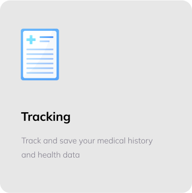
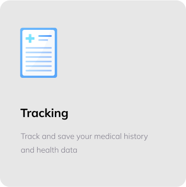

We provide a range of health services to support you in your healthcare journey.


 


Trafalgar provides progressive, and affordable healthcare, accessible on mobile and online for everyone. To us, it’s not just work. We take pride in the solutions we deliver

Helpful tools for managing your appointments. In this case, the role of the health laboratory is very important to do a disease detection...
Read more ->
How environment affects patient recovery and wellness. Herbal medicine is very widely used at this time because of its very good for your health...
Read more ->
Skin-related treatments and consultation for better results. In this case, the role of the health laboratory is very important to do a disease detection...
Read more ->